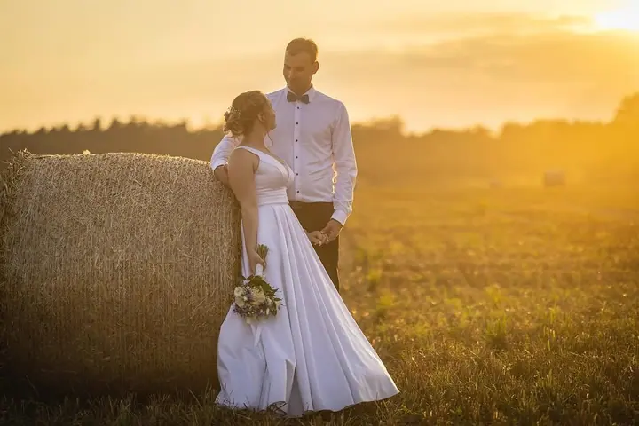
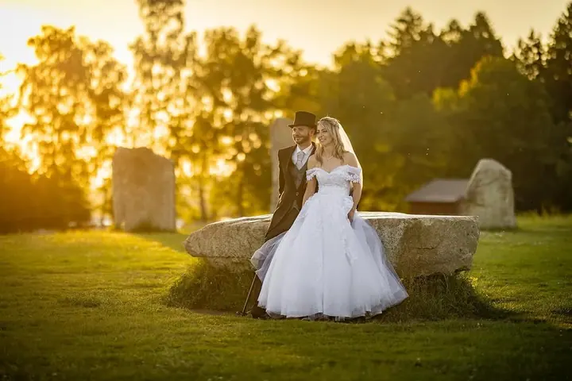
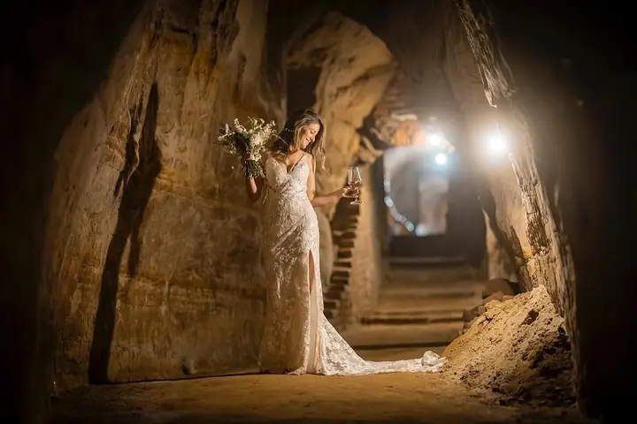
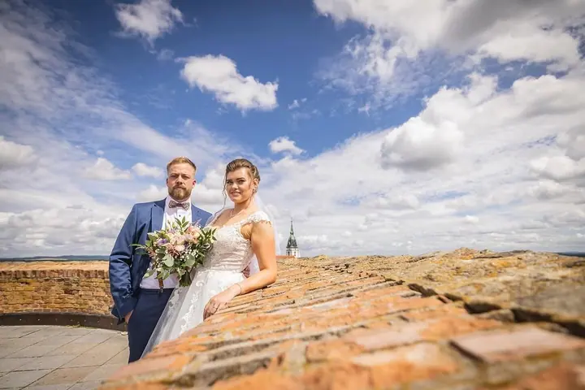

jedna
Svatební fotografie
Váš svatební den nafotím stylově a profesionálně, kdekoliv v České republice. Fotky, díky kterým si vzpomínky uchováte, jako by se staly včera.


Jmenuji se Martin Kozák a jsem svatební fotograf. Fotím svatby kdekoliv v České republice, od obřadu až po večerní světlo, kdy jsou fotky nejteplejší.
Více o mně
Co fotím
jedna
Váš svatební den nafotím stylově a profesionálně, kdekoliv v České republice. Fotky, díky kterým si vzpomínky uchováte, jako by se staly včera.
Stylově, profesionálně a kdekoliv v Česku

Za objektivem
Jmenuji se Martin Kozák a pod značkou kkphoto se věnuji svatbám. Chci, abyste si svůj den mohli uchovat tak, jako by se stal včera. Za fotkami si stojím stylově i profesionálně.
Za svatbou rád vyrazím kamkoliv po České republice. Fotím v makovém poli, na molu u rybníka, v pískovcové jeskyni nebo mezi hasičskými Tatrami. Hodně mě baví hledat s vámi místa a nápady, které k vám opravdu sedí.
Nejradši mám chvíle, kdy se slunce kloní k obzoru a celý den se trochu zpomalí. Tehdy si spolu na chvíli odskočíme a vzniknou fotky jen pro vás dva.
Martin
Napište mi na svatba@kkphoto.cz nebo zavolejte na 728 308 565. Pošlete datum a místo svatby a já vám ověřím, jestli mám volno.
Projdeme spolu, jak bude váš den vypadat, co je pro vás důležité a kde by se vám líbilo společné focení.
Jsem s vámi od přípravy až po večer a fotím obřad, hosty i detaily. Na společné portréty si najdeme klidnou chvíli, ideálně ve zlatém světle.
Fotky pečlivě vyberu a upravím, aby měly jednotný a teplý ráz. Termín a způsob předání si domluvíme předem.
Portfolio
Otázky
Svatby fotím kdekoliv v České republice. Napište mi, kde se berete, a domluvíme se.
Nejjednodušší je napsat na svatba@kkphoto.cz nebo zavolat na 728 308 565. Podle data vám potvrdím, jestli mám volno.
Rád. Baví mě hledat netradiční místa, ať je to pole, rybník, hrad nebo třeba hasičská auta, pokud k vám sedí.
Termín předání vám řeknu při domluvě. Každou fotku vybírám a upravuji ručně, aby celek působil jednotně.
Napište pár vět o tom, co si představujete. svatba@kkphoto.cz